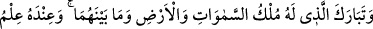

“Gökteki İlâh O’dur.” O, orada ibâdet olunmaya hak sâhibidir. Gök ehli melekler
tarafından gökte O’na ibâdet olunur. Gök onunla kâimdir ama O gökte değildir. “Yerdeki
İlâh da O’dur.” Orada ibâdet olunmaya hak sâhibidir. Gerek insanlardan gerekse
cinlerden bütün yer ehlinin mâbûdu O’dur. Yeryüzündeki bütün ilâhların ilâhıdır.
Yeryüzü halkının bütün ihtiyaçlarını gören ancak O’dur. Yerküre onunla kâimdir ama O
yerde değildir. “O, hakîmdir, her şeyi bilendir.”
Âyetteki her iki zarf da ilâh kelimesine mütealliktir. Çünkü burada zikredilen ilâh,
“mâbûd bi’l-hak” yani hak olarak ibâdet olunan; ibâdeti hak etmiş bulunan demektir.
Yahut burada kullanılan “ilâh” kelimeleri, sözkonusu mânâyı içinde bulundurmaktadır.
Meselâ “O Hâtemdir” sözü, “O cömerttir” anlamına gelir. Çünkü Hâtem cömertlikle
şöhret yapmıştır.
Âyetteki “ilâh” kelimeleri “Allah” olarak yani “O göklerde Allah’tır yerde de
Allah’tır” şeklinde okunduğunda da mânâ aynıdır. Yani “O gökte de yerde de ibâdet
olunandır” demektir. Nitekim “O göklerde de yerde de (tek) Allah’tır” (el-En’âm,
6/3) ifâdesi de bu mânâdadır. Yani O, varlığı vâcip, mutlak ve zorunlu olup göklerde de
yerde de ibâdet olunmaya lâyıktır.
“O, hakîmdir, her şeyi bilendir” ifâdesi, kendisinden önce verilen hükmün delîli
mesâbesindedir. Çünkü O, tam ve kâmil bir ilim ve hikmet sıfatına sâhiptir. İlâhlık
O’nun hakkı olup başkasının hakkı değildir. O, bütün âlemlerin ve herkesin yönetiminde
hikmet sâhibidir. Ezelden ebede kadar bütün halleri çok iyi bilendir.
85. Göklerin, yerin ve ikisi arasında bulunan her şeyin mülkü kendisine âid olan
Allah ne yücedir! Kıyâmet saatini bilmek de O’na mahsustur. Siz O’na
döndürüleceksiniz.
“Göklerin, yerin ve ikisi arasında” devamlı “bulunan” havanın, yahut bazen bulunan
kuşlar ve bulutlar gibi “her şeyin mülkü kendisine âid olan Allah” evlâd edinmekten,
ortaktan, zevâl ve intikalden “ne yücedir!” O’nun zikrinin bereketi ve şükrünün
ziyâdeliği her şeyi kaplamıştır. “Kıyâmet”in kopacağı “saati bilmek de O’na
mahsustur.” Onu başkası bilemez. “Siz” yaptıklarınızın karşılığını görmek için “O’na
döndürüleceksiniz.” Öyleyse O’na kavuşmak için hazırlıklı olmaya önemle dikkat
ediniz.
Anlatıldığına göre Harun Reşid bir gün ava çıktı. Havaya güçlü bir doğan saldı.
Doğan iyice yükselip gözden kayboldu. Artık dönüşünden iyice ümid kesilmişti ki
doğan bir balık avlamış olarak geri döndü. Harun Reşid devrin âlimlerini toplayıp bu
durumu onlara sordu. Mukatil şöyle dedi: “Ey müminlerin emîri! Senin deden İbn